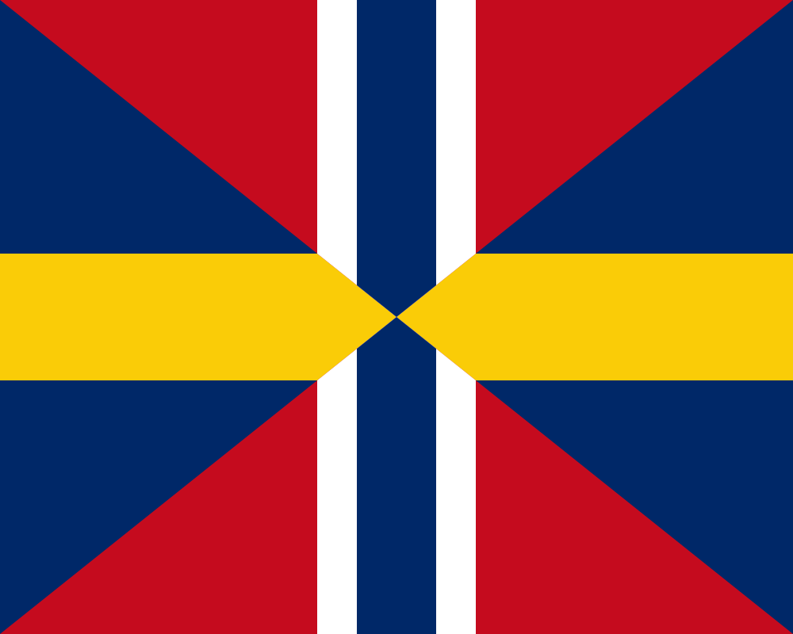

Nobelpriset
Nobels fredspris är ett av de fem Nobelprisen, inrättade genom Alfred Nobels testamente.Fedsprismedaljens framsida visar Alfred Nobels profil ur en aningen annan vinkel jämfört med övriga medaljer, men inskriptionen är den samma.
Baksidan visar en grupp på tre män som i broderlig förening. Inskriptionen lyder Pro pace et fraternitate gentium
vilket översätts till För fred och mänsklig broderskap
, dessutom står det Prix Nobel de la Paix
och aktuellt år. Fredsprismedaljen designades av den norske konstnären Gustav Vigeland
Alfred Nobels testamente säger att priset skall tilldelas dem som hafva gjort menskligheten den största nytta
och att en femtedel tilldelas den som har verkat mest eller best för folkens förbrödrande och afskaffande eller minskning af stående arméer samt bildande och spridande af fredskongresser
. Dessutom gällde dessa förutsättningar vad som gjorts under det gångna året. Detta frångicks dock av praktiska skäl av Nobelkommittén redan från början.
 Det är inte klarlagt varför Alfred Nobel ville att fredspriset skulle administreras av Norge, som vid tiden för Nobels död var i union med Sverige. Den norska nobelkommittén menar att en anledning kan ha varit att Nobel ansåg Norge ha en mindre militaristisk tradition än Sverige och därmed vara bättre lämpade att dela ut priset. Mot slutet av 1800-talet hade också Norge nära samarbete med den Interparlamentariska unionen och dess ansträngningar att lösa konflikter genom medling och skiljenämnder.